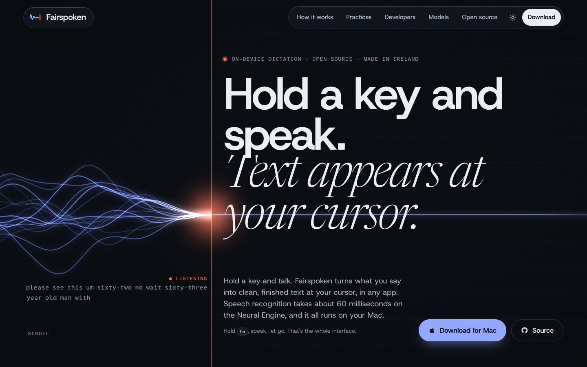
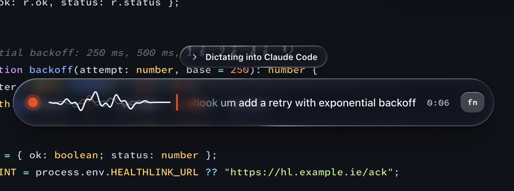
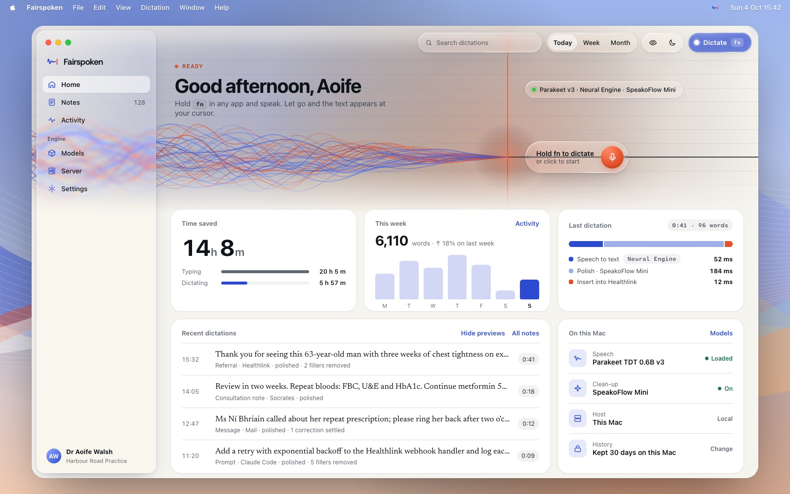
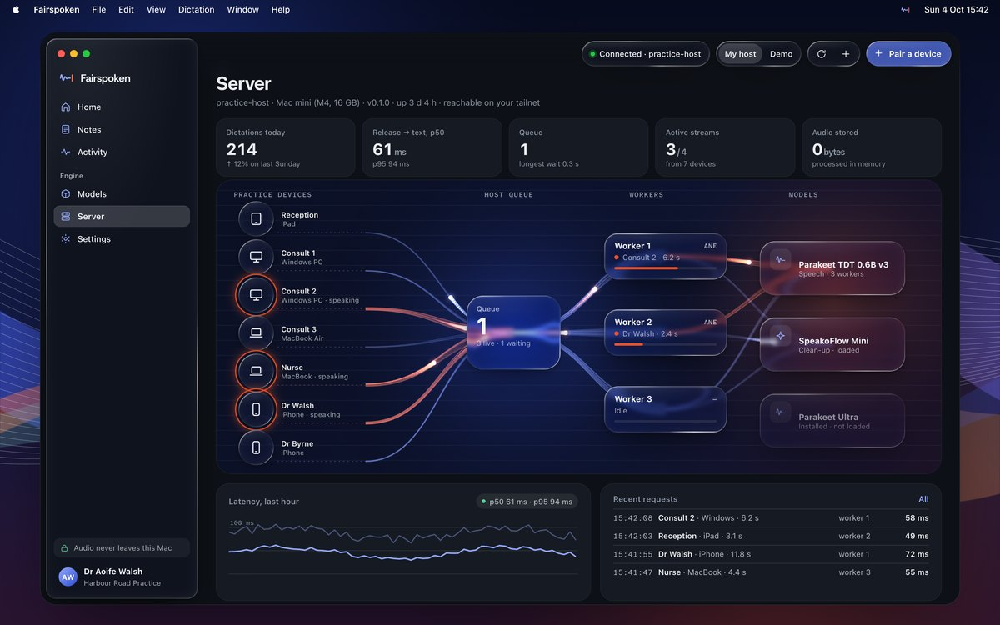

Website hero · WebGL signal → fair line
Fairspoken · brand boardOctober 2026
Every Irish schoolchild knows rough work from the fair copy. Fairspoken does the rough work for you: your voice, rough and real, settles into one clean line of text at your cursor. Local, open source and calm enough for a consulting room, fast enough for a terminal.
Paletteall text pairs WCAG AA or better
Limestone#F3F1EA
Bog Oak#0E1318 · 16.5:1
Copybook Blue#2C4BD0 · 6.1:1
Margin Red#E5512B · signal only
Night#0A0D12
Copybook 300#93A8FF · 8.6:1
Ruling#C5D1EC · lines
Gorse#F4BE4F · highlight
Success #1D7347Warning #8F5A00Error #B21F3BSlate 500 #5E6873
Typeall SIL OFL, self-hosted
Host Grotesk
Newsreader, the fair copy
Atkinson Hyperlegible Mono · 58 ms · 0O 1lI 5S
Signal headlines and UI on the web600 · −4%Fair copy only for finished words300 italicData timings, labels, doses500Native app SF Pro (system)Liquid Glass
Mark · “the Settle”

Liquid Glass · native app
Glass is the control layer: sidebar, toolbar, the dictation pill, node controls. Content stays on standard materials. Refraction bends what's beneath; the rim catches the light; tint adapts to the content behind.Motion · settle, don't bounce
- Fast attack, long settle: cubic-bezier(.22,1,.36,1), 420–900 ms
- Motion means state: swell = hearing you, settle = done
- Reduced motion: one still, settled frame
Voice · plain, warm, exact
PracticeRuns on the Mac in the room or on your own host. Your DPO can read every line.
Don't Military-grade AI security for next-gen clinical workflows!
DeveloperRelease to text in 58 ms. Identifiers keep their casing.
Don't Supercharge your coding with magical voice AI ✨

